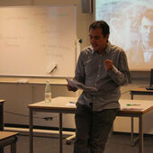
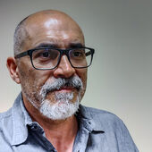

Marco metodológico para superar barreras no-tecnológicas en la adopción de la IA médica
CONFIIA es un proyecto de investigación financiado por el Ministerio de Ciencia, Innovación y Universidades, Agencia Estatal de Investigación, Gobierno de España y co-financiado por el Fondo Social Europeo Plus que busca desarrollar un marco metodológico integral para identificar y superar las barreras no tecnológicas en la adopción de la inteligencia artificial en el ámbito médico.
El proyecto se centra especialmente en las dinámicas de confianza entre profesionales sanitarios, pacientes y sistemas de IA, con especial atención a la integración y evaluación de Grandes Modelos de Lenguaje (GML) e IA generativa en medicina.
Septiembre 2025 - Agosto 2028
Universidad de Granada, Universidad Pontificia Comillas, CSIC
Salud, IA, Filosofía, Ciencias Cognitivas

Profesor de Bioética y de Psicología de la salud en la Escuela de Enfermería y Fisioterapia San Juan de Dios, Universidad Pontificia Comillas
Profesor-Investigador EMERGIA, especializado en ciencias cognitivas y éticas aplicadas, Universidad de Granada
Profesora de Bioética, Universidad Rey Juan Carlos

Docente-Investigador en Ciencias de la Salud, Universidad Pontificia Comillas
Profesor de Bioética, Universidad Complutense de Madrid
Estudiante de doctorado en Bioética, Universidad de Granada
Investigadora Posdoctoral Catalina Ruiz, Universidad de La Laguna
Profesional tecnológica especializada en Inteligencia Artificial y Computación Cuántica, Universidad Nebrija
Innovación, diseño y fabricación digital en Ciencias de la Salud. Fundación San Juan de Dios - SOUL Hi Hub. Universidad Pontificia Comillas
Profesor Titular, University of Southampton
Investigador Científico, Instituto de Filosofía, Grupo de Ética Aplicada, Centro de Ciencias Humanas y Sociales (CCHS - CSIC)
Juan de la Cierva Fellow, Instituto de Filosofía, Consejo Superior de Investigaciones Científicas
Profesor de Medicina Legal, Universidad Europea Madrid
Presidente, Sociedad Ecuatoriana de Bioética
Profesor de Filosofía política y de la tecnología, Universidad de Chile
Director del Instituto de Ética Clínica Francisco Vallés
Investigador, Department of Drug Policy and Pharmaceutical Assistance (NAF), National School of Public Health (ENSP), Oswaldo Cruz Foundation (Fiocruz)
Desarrollar y validar un marco metodológico integral que permita identificar y superar las barreras no tecnológicas en la adopción de la IA médica, centrándose en las dinámicas de confianza entre desarrolladores/as, profesionales sanitarios, pacientes y sistemas de IA.
Elaborar un marco teórico sobre los elementos de confianza en el desarrollo y uso de aplicaciones de IA en el ámbito sanitario.
Cuantificar los niveles de confianza actual hacia las aplicaciones IA en salud en profesionales y pacientes.
Identificar patrones y clusters de confianza mediante análisis topológico UMAP.
Desarrollo del marco metodológico/conceptual (Meses 1-6)
Impacto de la IA Generativa en Medicina (Meses 6-15)
Análisis de Confianza mediante UMAP (Meses 12-21)
Diseño y Pilotaje de Intervenciones Personalizadas (Meses 18-27)
Análisis y Diseminación de Resultados (Meses 24-36)
Desarrollo de un marco teórico integral sobre confianza en IA médica
Herramientas prácticas para la adopción de IA en entornos sanitarios
Manual completo de mejores prácticas y recomendaciones
¿Interesado en colaborar o conocer más sobre CONFIIA?
rortegal@comillas.edu and amastobiza@ugr.es
https://anibalmastobiza.github.io/CONFIIA/